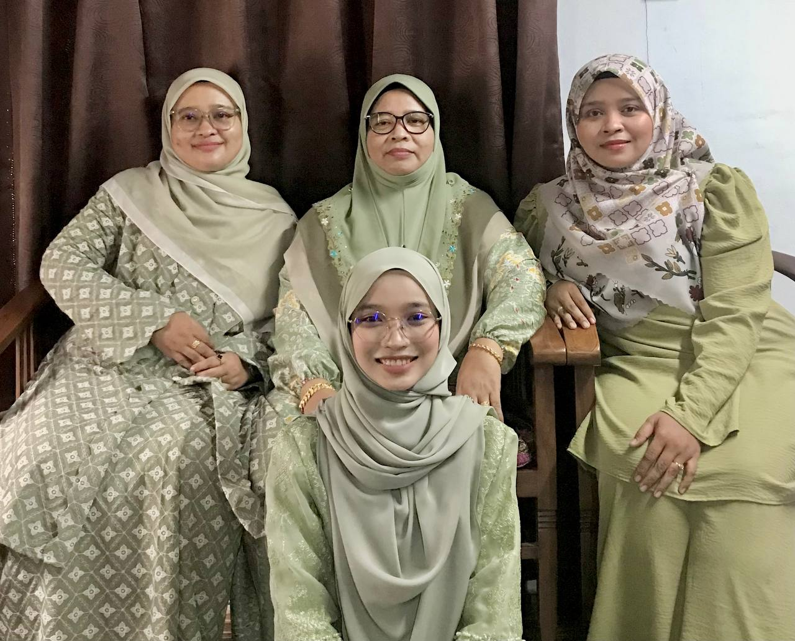
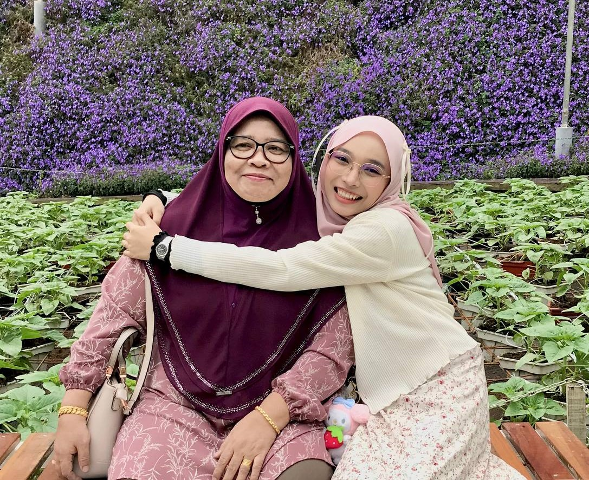
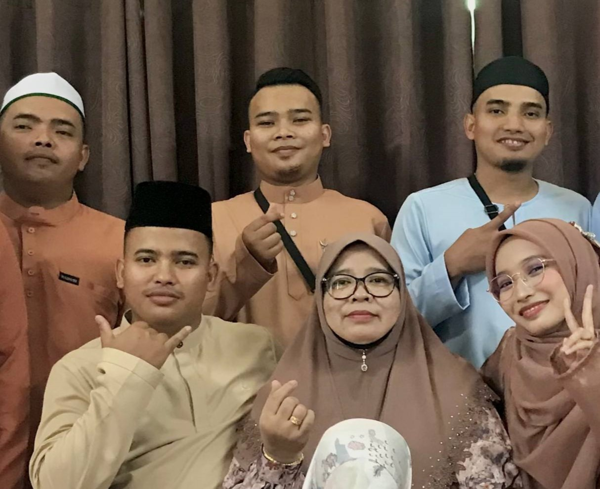

MY SISTERS
This picture shows me with my sisters. I have two older sisters who are my greatest supporters and role models. On the left is my eldest sister, NorFadilah binti Zamri, whom I fondly call Kak Yong. She is 38 years old and is always there to offer guidance and care. On the left is my second sister, Nurul Shuhada binti Zamri, or Kak Yang, aged 35. Both Kak Yong and Kak Yang treat me like their baby, even though I am now 20 years old. I am so lucky to have them showering me with endless love and support.
MY BELOVED MOM
My mother, Normah binti Zainordin, was born on April 10, 1966, and is currently 58 years old. She is the strongest and most loving person I know. She has been a guiding light in my life, raising me with wisdom and compassion after my father passed away when I was just 4 years old. Even though my father is no longer with us, I always pray for his peace and happiness in the hereafter. He remains a significant part of my heart, and I will forever miss him. My mom's unwavering love and sacrifices inspire me every day to be a better person.
MY BROTHERS
I am blessed to have four amazing brothers: Muhammad Azmi, whom I lovingly call Abang Nyah, is the eldest brother and a pillar of wisdom and guidance. Next is Muhammad Roslan, or Abang Cho, who fills our family with joy and his lively personality. Muhammad Shahrul Nizam, known as Abang Chik, is incredibly dependable and ensures everyone is looked after. Finally, there is Muhammad Amirul Danial, my youngest brother, whom I affectionately call Abang Chu. He is full of energy and creativity. Together, they form a strong support system, and I cherish the bond we share as siblings.